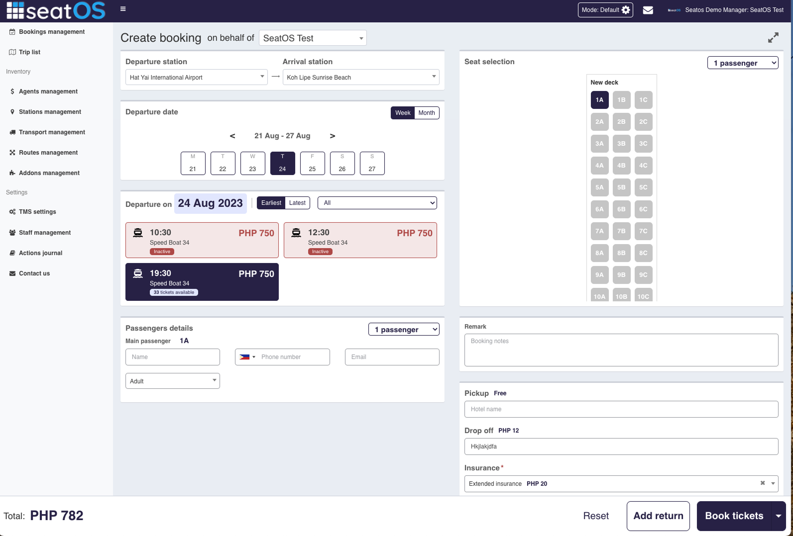
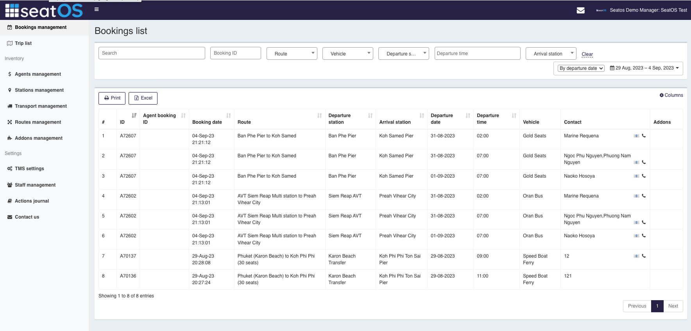
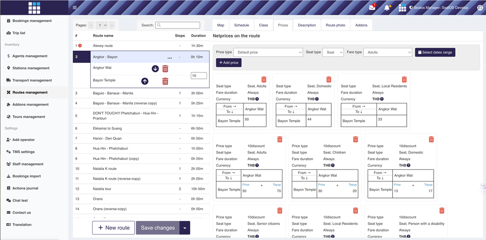
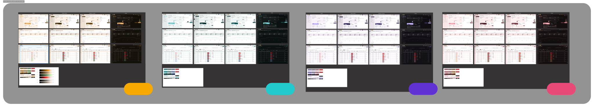
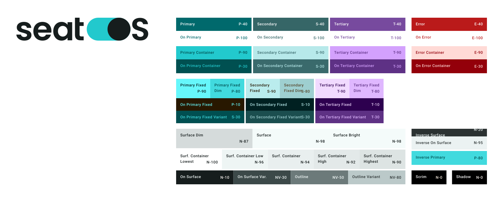

TMS для наземных перевозок
Как единственный продуктовый дизайнер облачной платформы для управления перевозками, я провела полный редизайн, с нуля построила дизайн-систему и перенесла на неё всё приложение — а затем продолжила развивать продукт: UX-улучшения на основе аналитики, новые инструменты для операторов и встроенный AI-ассистент.
Bootstrap 3, без дизайна и без системы
Я подключилась в самом начале проекта — как его первый дизайнер. Приложение было построено на устаревшем Bootstrap 3, без всякой дизайн-проработки. Интерфейс был максимально недружелюбным: крошечные шрифты, никаких подсказок, никаких подписей полей и множество сценариев, которые заводили пользователей в ошибки, потому что игнорировали реальный контекст использования — и без внятных подсказок, когда что-то шло не так. Макетов в Figma почти не было, а дизайн-библиотеки не было вовсе. Пользовательской документации тоже не было — так что это была настоящая работа Шерлока Холмса: разбираться, как всё на самом деле работает, параллельно осваивая совершенно новую бизнес-область.



Приложение в том виде, в каком я его застала. Пролистайте слайды — кликните на любой, чтобы увеличить.
Выбор самого консервативного пути
И мне, и команде было очевидно, что нужен редизайн. Но у нас были ограничения:
С учётом всего этого я выбрала самый консервативный подход — хотя эстетически предпочла бы что-то более лёгкое и современное:
Аналитика и редизайн
Я провела полный редизайн и с нуля построила дизайн-систему и библиотеку компонентов, а затем перевела на новую систему всё приложение. Время разработки было ограничено, поэтому подход был осознанно консервативным: сделать переход плавным, чтобы пользователи почти не ощущали разницы между старыми и обновлёнными блоками, пока под капотом модернизировался фундамент.
Параллельно я настроила аналитику — Google Analytics и Hotjar — проводила консультации с бизнес-девелоперами (BD) и пользователями и вносила UX-изменения там, где они были явно нужны. Миграция заняла восемь месяцев силами одного разработчика.

Новый брендинг
Наш бренд-дизайнер создал яркую современную палитру, и нам нужно было выбрать один из основных цветов бренда, чтобы перенести его в интерфейс. Я подготовила четыре варианта.

Мы выбрали синюю палитру — не только за ассоциацию с морем, но и потому, что производные от неё оттенки заметно приятнее для глаз. Пользователи могут проводить в интерфейсе весь рабочий день, поэтому этот комфорт был важен.
